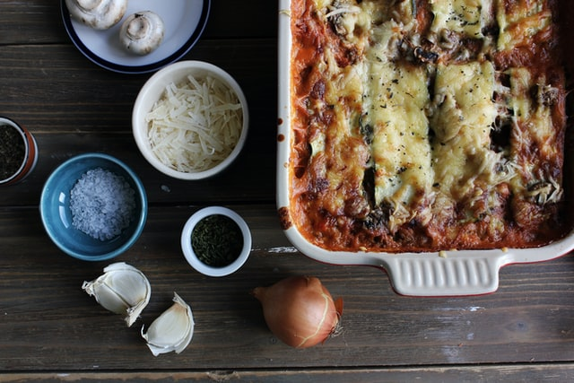

Lasanha

Descrição
Lasanha (lasagne em italiano) é tanto um tipo de massa alimentícia formada
por fitas largas, como também um prato, por vezes chamado lasanha ao
forno, feito com essas fitas colocadas em camadas, e entremeadas com
recheio (queijo, presunto, carne moída ou outros) e molho.
Ingredientes
- 1 massa de lasanha (pronta)
- 500 g de presunto
- 500 g de queijo mussarela
- 500 g carne moída
- 1 massa de tomate pronta
- sal a gosto
- pimenta-do-reino a gosto
- orégano a gosto
Modo de Preparo
-
Cozinhe a massa da lasanha em aproximadamente em 2 litros de água por 5
minutos.
-
Em uma panela cozinhe a carne moída, depois de cozida coloque molho de
tomate, o sal e temperos a gosto.
-
Comece montando com uma camada de molho, a massa da lasanha, o presunto
e o queijo
- Faça esse processo até tudo terminar.
- Aqueça o forno a 180º C durante 5 minutos.
- Coloque a lasanha no forno de 20 a 30 minutos.
voltar